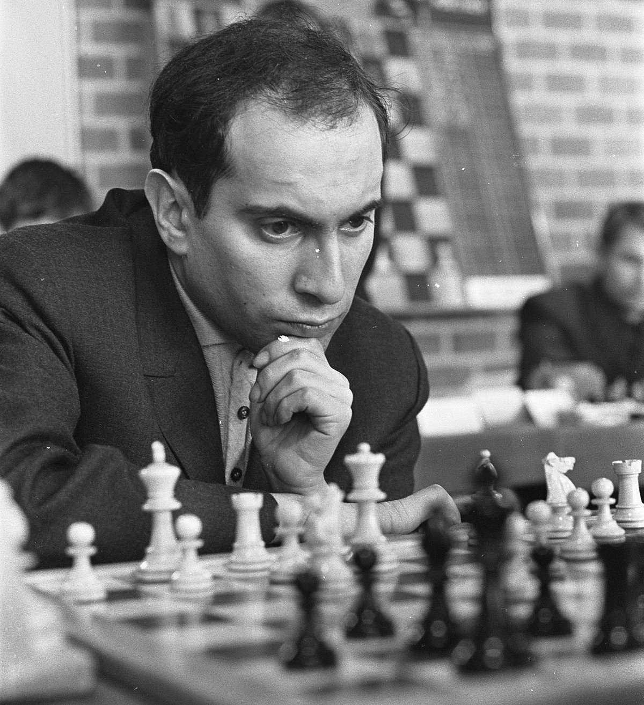
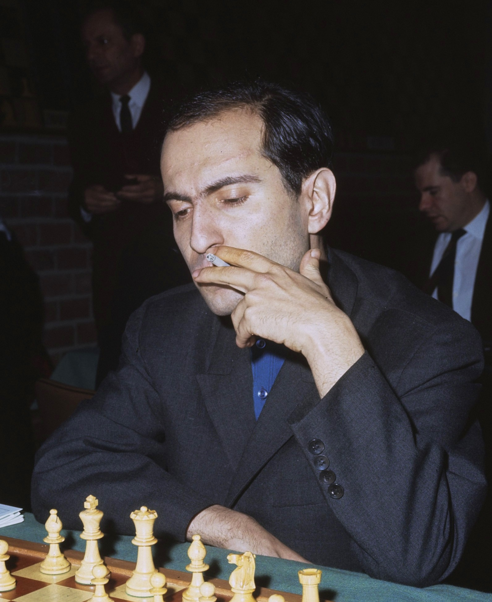
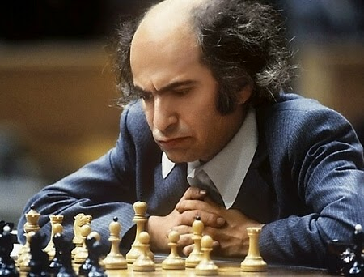

Mikhail Tal é um restaurante fundado em 9 de novembro de 1936 por Nehemija Tals em homenagem a seu filho que nasceu na mesma data, Mikhail Nekhemievich Tal. Localizado em Riga, Letônia, cresceu e tornou-se um restaurante muito respeitado.
Em 1960 tivemos uma grande crescente após o jovem Mikhail Tal de apenas 23 anos se tornar campeão Mundial de Xadrez ganhando o título de Mikhail Botvinnik. Somos hoje um restaurante internacional com filiais por todo o mundo, inclusive no Brasil onde esse site foi produzido. E ainda em Riga somos conhecidos por a casa do Mago de Riga, apelido esse do nosso homenageado.
Mesmo após a morte desse magnífico enxadrista em 28 de junho de 1992, nosso restaurante permaneceu seguindo o legado de esforço de Mikhail e mostrando a garra que ele sempre teve.
